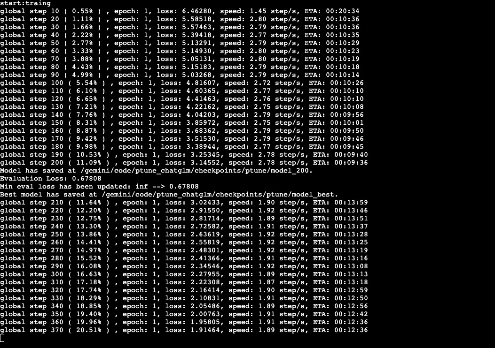
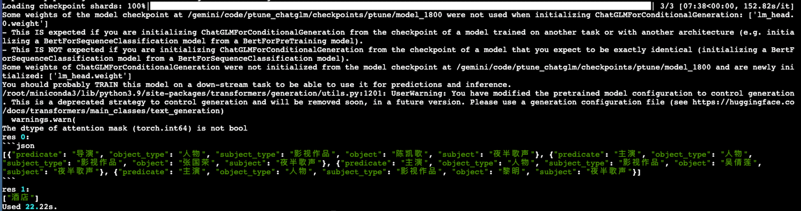

7.3 LoRA方式微调ChatGLM模型代码实现和训练
基于ChatGLM+LoRA方式模型搭建¶
学习目标¶
- 掌握基于ChatGLM+LoRA方式模型搭建代码的实现.
- 掌握模型的训练,验证及相关工具代码的实现.
- 掌握使用模型预测代码的实现.
模型搭建¶
- 本项目中完成ChatGLM+LoRA模型搭建、训练及应用的步骤如下（注意：因为本项目中使用的是ChatGLM预训练模型，所以直接加载即可，无需重复搭建模型架构）:
- 一、实现模型工具类函数
- 二、实现模型训练函数,验证函数
- 三、实现模型预测函数
一、实现模型工具类函数¶
- 目的：模型在训练、验证、预测时需要的函数
- 代码路径：/Users/**/PycharmProjects/llm/ptune_chatglm/utils
- utils文件夹共包含1个py脚本：common_utils.py
1. common_utils.py¶
- 目的：定义数据类型转换类、分秒时之间转换以及模型保存函数。
- 脚本里面包含一个类以及两个函数：CastOutputToFloat、second2time()以及save_model()
- 导入必备的工具包：
# coding:utf-8
# 导入必备工具包
import torch
import torch.nn as nn
from glm_config import *
import copy
pc = ProjectConfig()
- 定义CastOutputToFloat类
class CastOutputToFloat(nn.Sequential):
def forward(self, x):
return super().forward(x).to(torch.float32)
- 定义second2time()函数
def second2time(seconds: int):
"""
将秒转换成时分秒。
Args:
seconds (int): _description_
"""
m, s = divmod(seconds, 60)
h, m = divmod(m, 60)
return "%02d:%02d:%02d" % (h, m, s)
- 定义save_model()
def save_model(
model,
cur_save_dir: str
):
"""
存储当前模型。
Args:
cur_save_path (str): 存储路径。
"""
if pc.use_lora:
# merge lora params with origin model
merged_model = copy.deepcopy(model)
merged_model = merged_model.merge_and_unload()
merged_model.save_pretrained(cur_save_dir)
else:
model.save_pretrained(cur_save_dir)
二、实现模型训练函数,验证函数¶
- 目的：实现模型的训练和验证
- 代码路径：/Users/**/PycharmProjects/llm/ptune_chatglm/train.py
- 脚本里面包含两个函数：model2train()和evaluate_model()
- 导入必备的工具包
import os
import time
import copy
import argparse
from functools import partial
import peft
# autocast是PyTorch中一种混合精度的技术，可在保持数值精度的情况下提高训练速度和减少显存占用。
# 该方法混合精度训练，如果在CPU环境中不起任何作用
from torch.cuda.amp import autocast as autocast
from transformers import AutoTokenizer, AutoConfig, AutoModel, get_scheduler
from utils.common_utils import *
from data_handle.data_loader import *
from glm_config import *
pc = ProjectConfig()
- 定义model2train()函数
def model2train():
tokenizer = AutoTokenizer.from_pretrained(pc.pre_model, trust_remote_code=True)
config = AutoConfig.from_pretrained(pc.pre_model, trust_remote_code=True)
if pc.use_ptuning:
config.pre_seq_len = pc.pre_seq_len
config.prefix_projection = pc.prefix_projection
model = AutoModel.from_pretrained(pc.pre_model,
config=config,
trust_remote_code=True)
#model.half()将模型数据类型从默认的float32精度转换为更低的float16精度，减少内存
model = model.float()
# 梯度检查点是一种优化技术，用于在反向传播过程中降低内存使用
model.gradient_checkpointing_enable()
model.enable_input_require_grads()
# 不进行缓存，减少内存
model.config.use_cache = False
if pc.use_ptuning:
model.transformer.prefix_encoder.float()
if pc.use_lora:
model.lm_head = CastOutputToFloat(model.lm_head)
peft_config = peft.LoraConfig(
task_type=peft.TaskType.CAUSAL_LM,
inference_mode=False, # 推理时为True，比如绝定是否使用dropout
r=pc.lora_rank, # 低秩矩阵维度
lora_alpha=32, # 缩放系数
lora_dropout=0.1,
)
model = peft.get_peft_model(model, peft_config)
model = model.to(pc.device)
no_decay = ["bias", "LayerNorm.weight"]
optimizer_grouped_parameters = [
{
"params": [p for n, p in model.named_parameters() if not any(nd in n for nd in no_decay)],
"weight_decay": pc.weight_decay,
},
{
"params": [p for n, p in model.named_parameters() if any(nd in n for nd in no_decay)],
"weight_decay": 0.0,
},
]
optimizer = torch.optim.AdamW(optimizer_grouped_parameters, lr=pc.learning_rate)
# model.to(pc.device)
#
train_dataloader, dev_dataloader = get_data()
# 根据训练轮数计算最大训练步数，以便于scheduler动态调整lr
num_update_steps_per_epoch = len(train_dataloader)
#指定总的训练步数，它会被学习率调度器用来确定学习率的变化规律，确保学习率在整个训练过程中得以合理地调节
max_train_steps = pc.epochs * num_update_steps_per_epoch
warm_steps = int(pc.warmup_ratio * max_train_steps) # 预热阶段的训练步数
lr_scheduler = get_scheduler(
name='linear',
optimizer=optimizer,
num_warmup_steps=warm_steps,
num_training_steps=max_train_steps,
)
#
loss_list = []
tic_train = time.time()
global_step, best_eval_loss = 0, float('inf')
for epoch in range(1, pc.epochs + 1):
for batch in train_dataloader:
if pc.use_lora:
with autocast():
loss = model(
input_ids=batch['input_ids'].to(dtype=torch.long, device=pc.device),
labels=batch['labels'].to(dtype=torch.long, device=pc.device)
).loss
else:
loss = model(
input_ids=batch['input_ids'].to(dtype=torch.long, device=pc.device),
labels=batch['labels'].to(dtype=torch.long, device=pc.device)
).loss
optimizer.zero_grad()
loss.backward()
optimizer.step()
lr_scheduler.step()
loss_list.append(float(loss.cpu().detach()))
global_step += 1
if global_step % pc.logging_steps == 0:
time_diff = time.time() - tic_train
loss_avg = sum(loss_list) / len(loss_list)
print("global step %d ( %02.2f%% ) , epoch: %d, loss: %.5f, speed: %.2f step/s, ETA: %s"% (global_step,
global_step / max_train_steps * 100,
epoch,
loss_avg,
pc.logging_steps / time_diff,
second2time(int(max_train_steps - global_step) / (pc.logging_steps / time_diff))))
tic_train = time.time()
if global_step % pc.save_freq == 0:
cur_save_dir = os.path.join(pc.save_dir, "model_%d" % global_step)
save_model(model, cur_save_dir)
tokenizer.save_pretrained(cur_save_dir)
print(f'Model has saved at {cur_save_dir}.')
eval_loss = evaluate_model(model, dev_dataloader)
print("Evaluation Loss: %.5f" % (eval_loss))
if eval_loss < best_eval_loss:
print(f"Min eval loss has been updated: {best_eval_loss:.5f} --> {eval_loss:.5f}")
best_eval_loss = eval_loss
cur_save_dir = os.path.join(pc.save_dir, "model_best")
save_model(model, cur_save_dir)
tokenizer.save_pretrained(cur_save_dir)
print(f'Best model has saved at {cur_save_dir}.')
tic_train = time.time()
- 定义evaluate_model()函数
def evaluate_model(model, dev_dataloader):
"""
在测试集上评估当前模型的训练效果。
Args:
model: 当前模型
data_loader: 测试集的dataloader
"""
model.eval()
loss_list = []
with torch.no_grad():
for batch in dev_dataloader:
if pc.use_lora:
with autocast():
loss = model(
input_ids=batch['input_ids'].to(dtype=torch.long, device=pc.device),
labels=batch['labels'].to(dtype=torch.long, device=pc.device)
).loss
else:
loss = model(
input_ids=batch['input_ids'].to(dtype=torch.long, device=pc.device),
labels=batch['labels'].to(dtype=torch.long, device=pc.device)
).loss
loss_list.append(float(loss.cpu().detach()))
model.train()
return sum(loss_list) / len(loss_list)
- 调用:
cd /Users/**/PycharmProjects/llm/ptune_chatglm
# 实现模型训练
python train.py
- 输出结果:

三、实现模型预测函数¶
- 目的：加载训练好的模型并测试效果
- 代码路径：/Users/**/PycharmProjects/llm/prompt_tasks/ptune_chatglm/inference.py
- 导入必备的工具包
import time
import torch
from transformers import AutoTokenizer, AutoModel
# torch.set_default_tensor_type(torch.cuda.HalfTensor)
- 预测代码具体实现
def inference(
model,
tokenizer,
instuction: str,
sentence: str
):
"""
模型 inference 函数。
Args:
instuction (str): _description_
sentence (str): _description_
Returns:
_type_: _description_
"""
with torch.no_grad():
input_text = f"Instruction: {instuction}\n"
if sentence:
input_text += f"Input: {sentence}\n"
input_text += f"Answer: "
batch = tokenizer(input_text, return_tensors="pt")
out = model.generate(
input_ids=batch["input_ids"].to(device),
max_new_tokens=max_new_tokens,
temperature=0
)
out_text = tokenizer.decode(out[0])
answer = out_text.split('Answer: ')[-1]
return answer
if __name__ == '__main__':
from rich import print
device = 'mps:0'
max_new_tokens = 300
model_path = "./llm/ptune_chatglm/checkpoints/model_1800"
tokenizer = AutoTokenizer.from_pretrained(
model_path,
trust_remote_code=True
)
model = AutoModel.from_pretrained(
model_path,
trust_remote_code=True
).half().to(device)
samples = [
{
'instruction': "现在你是一个非常厉害的SPO抽取器。",
"input": "下面这句中包含了哪些三元组，用json列表的形式回答，不要输出除json外的其他答案。\n\n73获奖记录人物评价：黄磊是一个特别幸运的演员，拍第一部戏就碰到了导演陈凯歌，而且在他的下一部电影《夜半歌声》中演对手戏的张国荣、吴倩莲、黎明等都是著名的港台演员。",
},
{
'instruction': "你现在是一个很厉害的阅读理解器，严格按照人类指令进行回答。",
"input": "下面子中的主语是什么类别，输出成列表形式。\n\n第N次入住了，就是方便去客户那里哈哈。还有啥说的"
}
]
start = time.time()
for i, sample in enumerate(samples):
res = inference(
model,
tokenizer,
sample['instruction'],
sample['input']
)
print(f'res {i}: ')
print(res)
print(f'Used {round(time.time() - start, 2)}s.')
- 结果展示

小节总结¶
- 本小节实现了基于BERT+PET模型的构建, 并完成了训练和测试评估.